第 24 讲：第三方库与 PyPI（6.1）
在上一模块（模块五）中，我们完成了 Web 全栈开发中至关重要的一步——前后端握手联调。前端 Next.js 页面与后端 FastAPI 进程跨越端口鸿沟，通过 CORS 中间件与环境变量配置实现了稳定通信。
然而，在当前的工程体系中，我们依然留有两笔明显的“业务欠账”：
1. 分析数据纯属虚构：文字实验室调用的 POST /api/analyze 接口，当前返回的拼音是一个固定占位符，情感打分与状态标签也是完全写死的 Mock 数据；
2. 分析记录阅后即焚：用户在前端提交的每一次文本分析，在页面刷新后便荡然无存，整个后端没有任何持久化存储与“记忆”能力。
从本讲开始，我们将正式步入模块六：数据处理与持久化体系。在模块六的前两讲中，我们将重点兑现第一笔欠账——引入 Python 强大的自然语言处理（NLP）生态，用真正的算法算出真实的拼音与情感分值。
本节我们将深入探讨现代软件工程的核心思想：拒绝重新发明轮子（Don't Reinvent the Wheel），认识 Python 官方包仓库 PyPI，掌握“找库、验库、玩库（REPL）、入库”的标准化工程方法论，并固化项目依赖。
flowchart TD
subgraph Requirements ["真实业务需求 (文字实验室)"]
ReqPinyin["中文汉字转拼音<br/>(需覆盖几万汉字 + 多音字精准切分)"]
ReqSentiment["中文情感倾向打分<br/>(需 NLP 语义理解 + 机器学习打分模型)"]
end
subgraph Decision ["工程决策模型"]
direction TB
Reinvent["从零自研造轮子<br/>(构建语料库、标注模型、耗费数月)"]
OpenSource["拥抱开源生态<br/>(利用成熟算法库，分钟级落地)"]
Reinvent -.->|效率低下且极易粗糙| Fail["高研发成本与风险"]
OpenSource -->|现代工程最佳实践| PyPI["PyPI (Python Package Index)"]
end
subgraph Pipeline ["第三方库标准化选型与接入四部曲"]
direction TB
Step1["1. 找库：AI 需求生成候选名单 (DeepSeek)"]
Step2["2. 验库：数据佐证 (GitHub Stars) + 文档核验 (README)"]
Step3["3. 玩库：终端 REPL 交互式极速验证"]
Step4["4. 入库：依赖锁定 (pip freeze) 并接入业务代码"]
Step1 --> Step2 --> Step3 --> Step4
end
Requirements --> Decision
PyPI --> Pipeline
1. 业务痛点与“不造轮子”哲学
(参考时间: 00:00)
回顾我们文字实验室的交互设计：用户在网页端输入任意一段文字，后端应返回两项核心元数据： 1. 精准拼音：将每个汉字转换为带声调的拼音； 2. 情感量化：输出一个 0 到 1 之间的分值（越接近 1 越积极，越接近 0 越消极），并据此打上“积极”、“消极”或“平静”的标签。
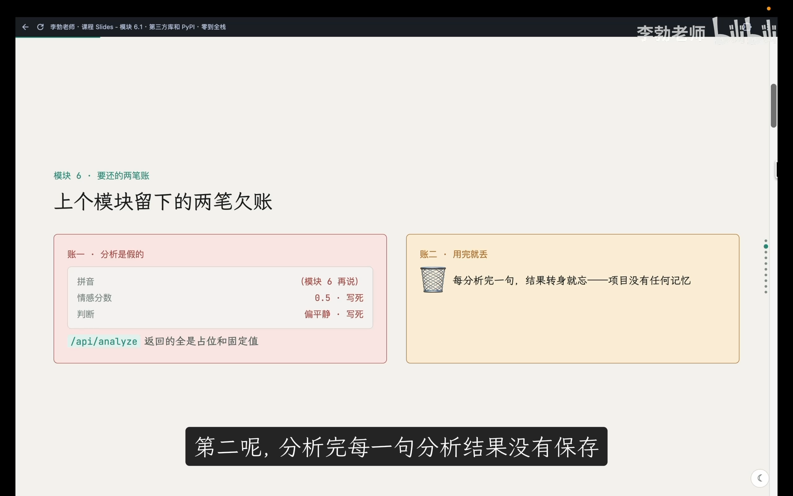
📷 模块六全景大纲与两笔业务欠账
在 B 站中打开 (00:00:30)
要自己纯手工手搓一套这样的算法，底层难度到底有多大？
挑战一：汉字拼音标注与复杂多音字
中文常用汉字多达数千，生僻字与扩展集更是超过数万。仅仅建立一张“汉字 -> 拼音”的字典表是远远不够的，因为中文存在海量的多音字（Polyphone）：
* “重庆”读作 chóng，而“重要”读作 zhòng；
* “银行”读作 háng，而“行走”读作 xíng。
计算机必须能够结合上下文分词与词组规则库，才能在句子中判定多音字的真实读音。
挑战二：情感量化与语义深度
情感倾向绝非简单的查字典能够解决。一句表面看似平静的话可能蕴含强烈的讽刺或支持。要量化情感，通常必须从海量标注语料库出发，使用自然语言处理算法或机器学习分类器训练出推理模型。
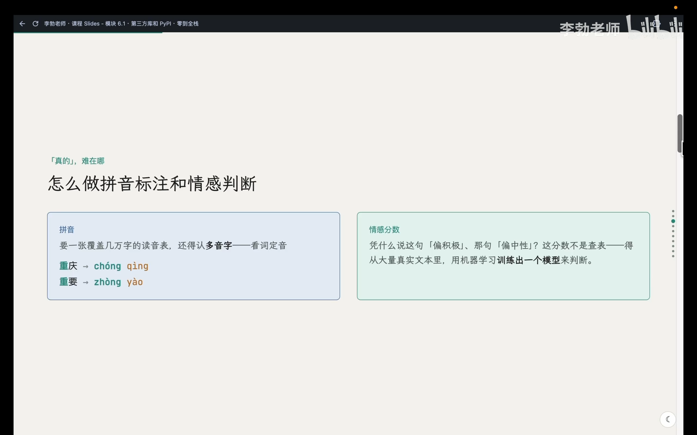
📷 自研与开源方案对比：拒绝重复造轮子
在 B 站中打开 (00:02:20)
[!IMPORTANT] 软件工程的“轮子定理”： 软件工程中有一句著名的谚语叫“不要重新发明轮子”（Don't Reinvent the Wheel）。 既然前人已经花费数年时间用汗水打磨出了高可靠性、经过工业级检验的高性能轮子，我们再从头手搓一个不仅费时费力，且搓出来的多半比现成的更为粗糙。 优秀的软件工程师并非所有代码都亲手一行行写，而是深谙如何在开源生态中站在巨人的肩膀上，挑选并组装高质量的轮子。
2. Python 生态枢纽：认识 PyPI 与 pip
(参考时间: 02:40)
既然有现成的轮子，这些由全世界开发者共同贡献的第三方库（Third-party Libraries）存放在哪里？
很多初学者的第一反应是：“在 GitHub 上！”
没错，开源项目的源代码绝大多数托管在 GitHub 上。然而在开发中，如果我们每引用一个库都要把它的 Git 源码 clone 下来、自己配置编译，效率依然极其低下。
- 在前端领域，我们在 npm 注册表上发布与下载包，只需一行
npm install animejs； - 在 Python 领域，对标 npm 的官方公共包仓库名为 PyPI（Python Package Index）。
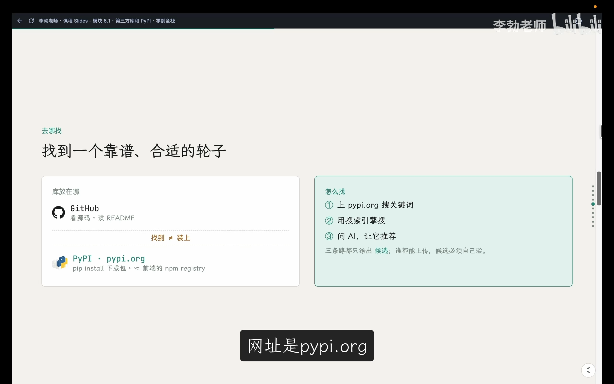
📷 PyPI 官方公共仓库网站首页概览
在 B 站中打开 (00:03:50)
什么是 PyPI？
PyPI（网址：pypi.org）是全世界所有 Python 共享代码与预编译轮子（Wheel 包）的中心枢纽。截至目前，PyPI 上托管着超过数十万个开源软件包。
当我们在终端敲下：
pip install <包名>
Python 的包管理器 pip 就会跨越网络直连 pypi.org，自动解析版本依赖，将编译打包好的库文件安全、高速地安装至当前 Python 环境的 site-packages 目录中。
3. 现代寻库范式：AI 辅助生成候选名单
(参考时间: 04:00)
面对 PyPI 上浩如烟海的几十万个库，我们如何精准定位哪一个库最符合我们的业务需求？
在传统搜索引擎时代，我们需要在 Google 或百度中翻找各种博客和过时对比。而在现代 AI 时代，最佳的检索范式是：将结构化需求描述给大语言模型（如 DeepSeek、ChatGPT），让 AI 迅速输出头部候选名单。
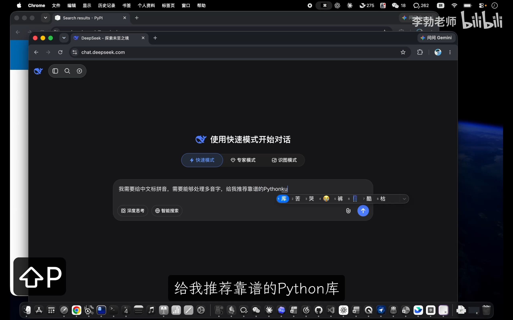
📷 利用 DeepSeek AI 生成拼音与情感分析第三方库候选
在 B 站中打开 (00:05:40)
我们在对话中提出具体诉求：
1. “我需要给中文标拼音，需要能够处理多音字，给我推荐靠谱的 Python 库。”
* AI 首选推荐：pypinyin（覆盖全面、多音字词典完备、汉字转拼音标杆）。
2. “我还需要给中文做情感判断，直接给一句话打一个情感分，推荐什么库？”
* AI 首选推荐：snownlp（轻量级、开箱即用、自带中文朴素贝叶斯情感分类模型）。
[!WARNING] AI 建议不能盲目照单全收： 1. 知识滞后：AI 可能推荐数年前流行、但如今作者已停更甚至存在安全漏洞的废弃库； 2. 幻觉伪造：AI 有时会一本正经地编造出一个根本不存在的库名（如
chinese-sentiment-analysis-fast）； 3. 质量参差：PyPI 属于公共开放平台，任何人都可以上传同名或近似包，甚至存在恶意仿冒钓鱼包。因此，让 AI 提供候选只是第一步，工程师必须亲自把关第二步——验库！
4. 严谨验库双重关卡：数据佐证与文档核验
(参考时间: 06:30)
如何验证一个第三方库是否靠谱、能不能满足项目需求？我们必须建立双重核验关卡：
flowchart LR
Candidate["AI 推荐的候选库名单"] --> Gate1{"第一道门：数据佐证<br/>(靠不靠谱? 是否维护?)"}
Gate1 -->|Stars > 1k / 近期有维护| Gate2{"第二道门：文档核验<br/>(能力是否契合业务?)"}
Gate1 -->|0 Star / 废弃无描述| Reject1["淘汰：存在安全隐患与不可用风险"]
Gate2 -->|API 满足声调/打分规范| Adopt["采纳：进入安装与 REPL 测试"]
Gate2 -->|功能不匹配或黑盒不透明| Reject2["淘汰：另寻替代方案"]
第一道门：数据佐证（GitHub Stars 与维护状态）
在 PyPI 搜索 pypinyin：
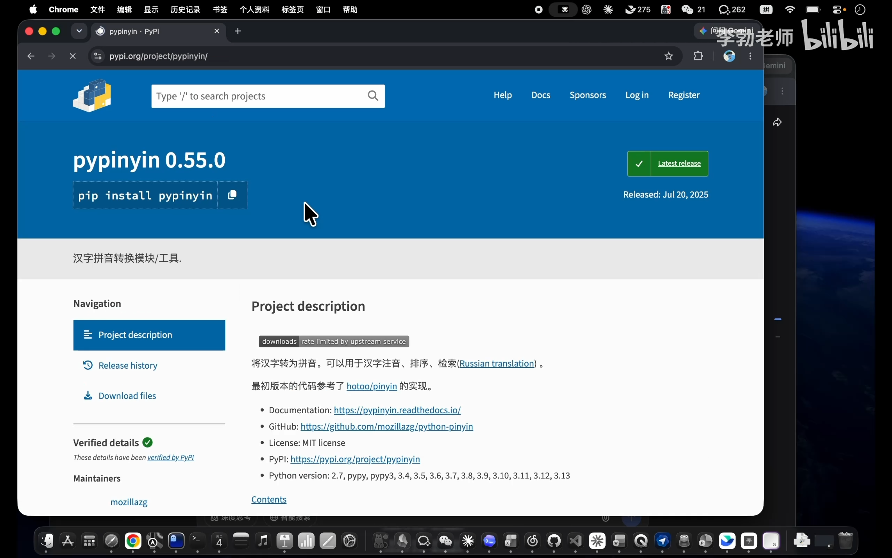
📷 PyPI 搜索 pypinyin 页面与 GitHub 项目跳转
在 B 站中打开 (00:07:05)
点击页面左侧的 Homepage 跳转至 GitHub 仓库：
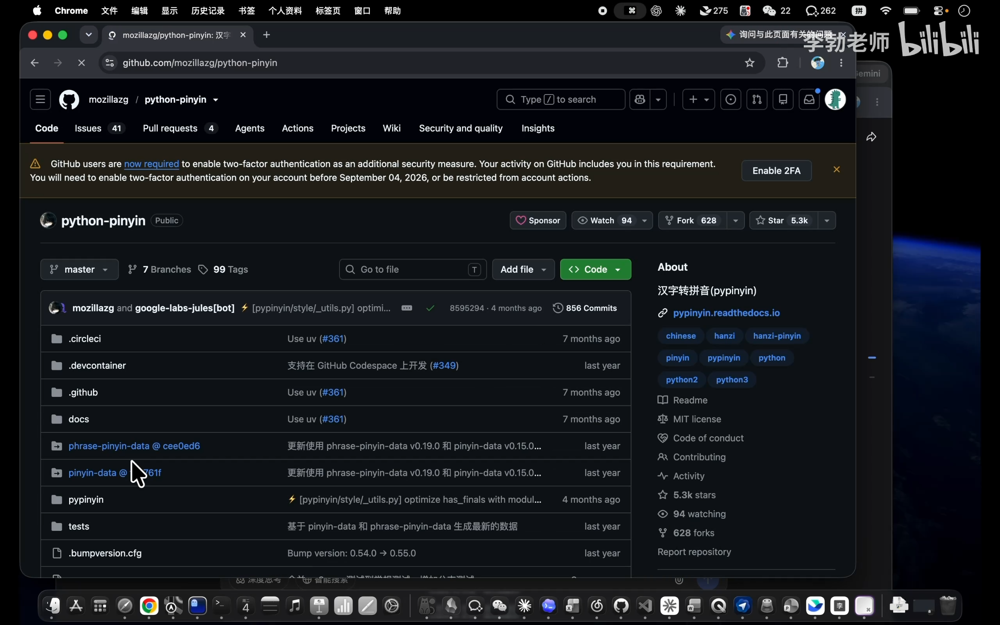
📷 pypinyin GitHub 仓库 Stars 数量与近期维护动态
在 B 站中打开 (00:07:25)
- Star 数量：Star 达到数千（几 K）以上，代表经过了全网大量开发者与企业的实际考验；
- 最近更新（Last Commit）：近几个月内仍有代码提交和 Issue 响应，证明项目拥有活跃维护者。
反面案例甄别：snownlp vs snownlp-pro
当在 PyPI 搜索 snownlp 时，搜索结果中还会跳出一个名字看似更高级的 snownlp-pro：
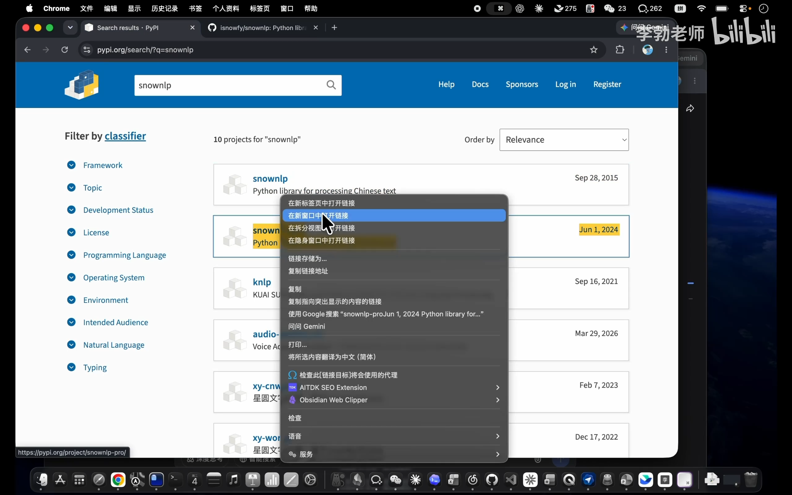
📷 snownlp 与 snownlp-pro 的靠谱性对比排查
在 B 站中打开 (00:08:25)
snownlp：拥有数千 Stars，虽然由于传统 NLP 技术成熟近期更新放缓，但其代码底座极为稳定；snownlp-pro：Project Description 为空，打开 GitHub 一看竟是 0 Stars 的个人试验品！ 如果仅仅凭名字“Pro”盲目选用，项目将埋下巨大的安全与稳定性隐患。
第二道门：文档核验（README 与 API 契合度）
靠谱不等于合用。我们必须翻看官方 GitHub 的 README.md，逐一对照我们的业务参数：
- 核验
snownlp情感分析能力：
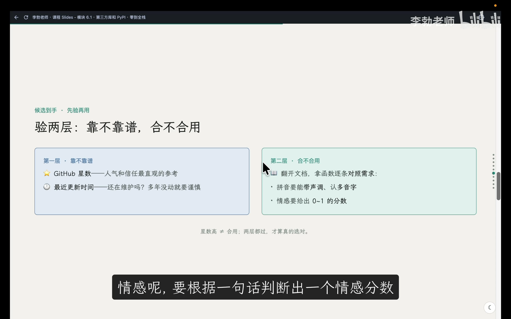
📷 snownlp README 中的 sentiments 情感概率打分演示
在 B 站中打开 (00:09:50)
文档明确给出：s.sentiments 会输出一个 0.0 ~ 1.0 之间的浮点数。例如句子“这个东西真心很赞”得分在 0.9 以上（高度 positive）。完全契合我们的打分需求！
- 核验
pypinyin拼音与多音字能力：
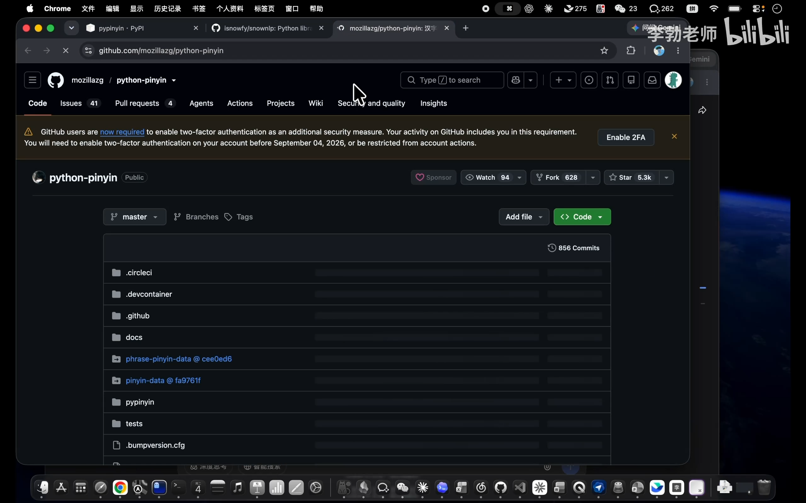
📷 pypinyin README 中的多音字与拼音输出规范
在 B 站中打开 (00:10:45)
文档明确展示了多音字的处理能力（如“中心”与“命中”的声调自动切分），且提供了多种声调输出模式。完全契合业务！
5. 沙箱安装：将第三方库置入虚拟环境
(参考时间: 10:00)
核验通过后，我们正式将其安装到后端项目中。
[!CAUTION] 绝对不可在全局 Python 中随意安装！ 在第 20 讲中我们反复强调：必须先激活当前后端的独立沙箱虚拟环境（Terminal 提示符前显示括号
(.venv)），确保库文件仅被限制在当前项目中，绝不污染系统全局环境。
# 进入后端目录
cd zero-to-tech/backend
# 激活虚拟环境 (Windows PowerShell)
.venv\Scripts\Activate.ps1
# 安装拼音处理库
pip install pypinyin
# 安装自然语言处理库
pip install snownlp
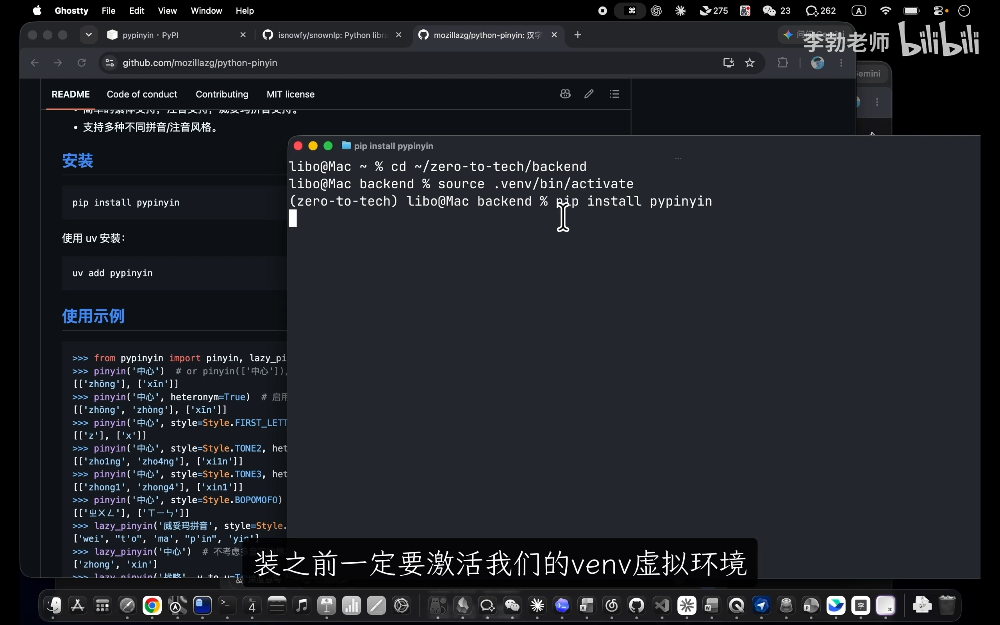
📷 在虚拟环境中执行 pip install 安装两个第三方库
在 B 站中打开 (00:11:55)
安装过程瞬间完成，pip 自动解析并下载了两个库及其关联的轻量级依赖。
6. 交互式神器：深入 Python REPL 模式
(参考时间: 12:40)
库安装好了，我们接下来该怎么跑一跑、验证一下效果？
按照传统思路，很多初学者会新建一个 test.py 脚本，在里面写代码、保存、运行、打印、然后再手动删掉这个临时测试文件。
如果只是想快速试一试几个 API，这种方式显得笨重且拖沓。现代编程语言普遍提供了一种更加优雅迅捷的工具——REPL。
什么是 REPL？
REPL 是 Read-Eval-Print Loop（读取-求值-输出循环） 的首字母缩写：
* Read：接收用户在终端键盘键入的表达式；
* Eval：Python 引擎就地对代码进行求值计算；
* Print：无需显式写 print()，直接把计算出的结果在屏幕上回显；
* Loop：等待用户下一次输入，周而复始。
在激活了虚拟环境的终端中，直接敲入 python 回车，终端提示符就会转变为经典的 >>>：
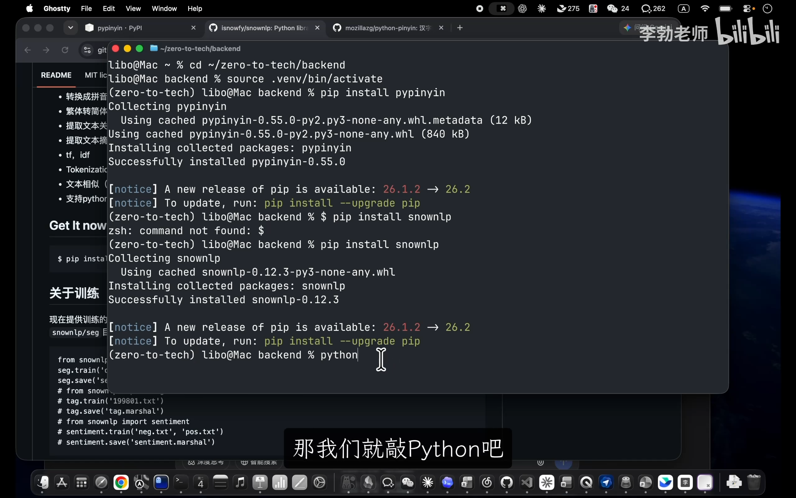
📷 进入 Python 交互式 REPL 模式与三箭头提示符
在 B 站中打开 (00:13:15)
在 REPL 中，任何表达式都会即时得出结果：
>>> 1 + 1
2
>>> x = 10 + 20
>>> x
30
跨语言的 REPL 思想
不仅 Python 拥有 REPL，几乎所有现代化语言都具备该特性：
* Node.js：终端敲 node 即可进入 Node REPL（输入 .exit 退出）；
* Python：终端敲 python 进入，输入 exit() 或按快捷键 Ctrl + Z（Windows）/ Ctrl + D（Mac/Linux）退出。
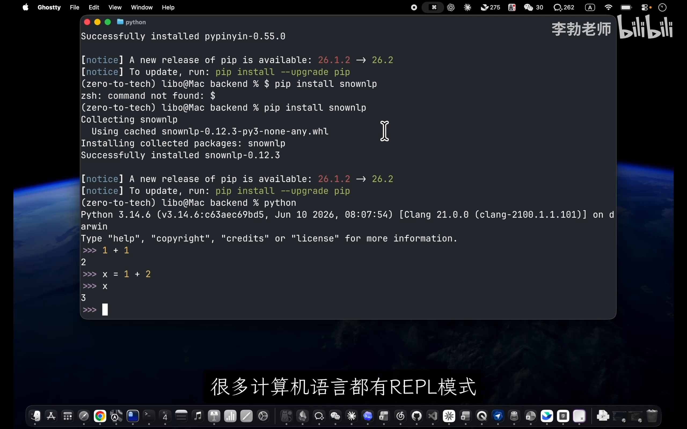
📷 Node.js REPL 与多语言交互环境横向对比
在 B 站中打开 (00:14:15)
7. REPL 现场实战：玩转 pypinyin 与 snownlp
(参考时间: 14:50)
现在，我们在 Python REPL 提示符 >>> 下现场探索这两个新武器。
实战一：pypinyin 多音字与扁平化格式
首先导入并测试默认的 pinyin() 函数：
>>> import pypinyin
>>> from pypinyin import pinyin, lazy_pinyin, Style
# 基础测试
>>> pinyin("你好")
[['nǐ'], ['hǎo']]
默认的 pinyin() 会为每个字生成一个包含声调的单元素列表，整个句子则是一层外层大列表。
测试核心的多音字甄别能力：
>>> pinyin("重庆")
[['chóng'], ['qìng']]
>>> pinyin("重要")
[['zhòng'], ['yào']]
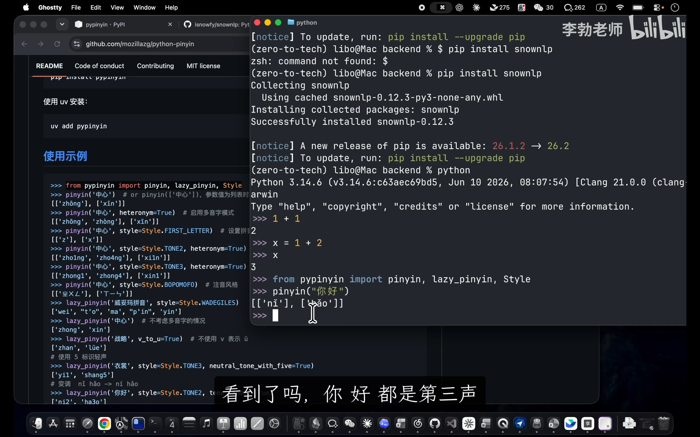
📷 REPL 中验证 pypinyin 对重庆与重要多音字的精准切分
在 B 站中打开 (00:15:40)
多音字识别精准无误！
但二维嵌套列表 [['zhòng'], ['yào']] 在返回给前端 JSON 时结构略显繁琐。如何输出单层扁平列表？
查阅文档发现，库提供了 lazy_pinyin：
>>> lazy_pinyin("重要")
['zhong', 'yao']
单层列表虽然简洁，但声调符号丢失了！
如何让 lazy_pinyin 既保持单层扁平结构，又能完整输出准确的声调符号？查阅文档中的 Style 模块，传入 style=Style.TONE 即可：
>>> lazy_pinyin("重要", style=Style.TONE)
['zhòng', 'yào']
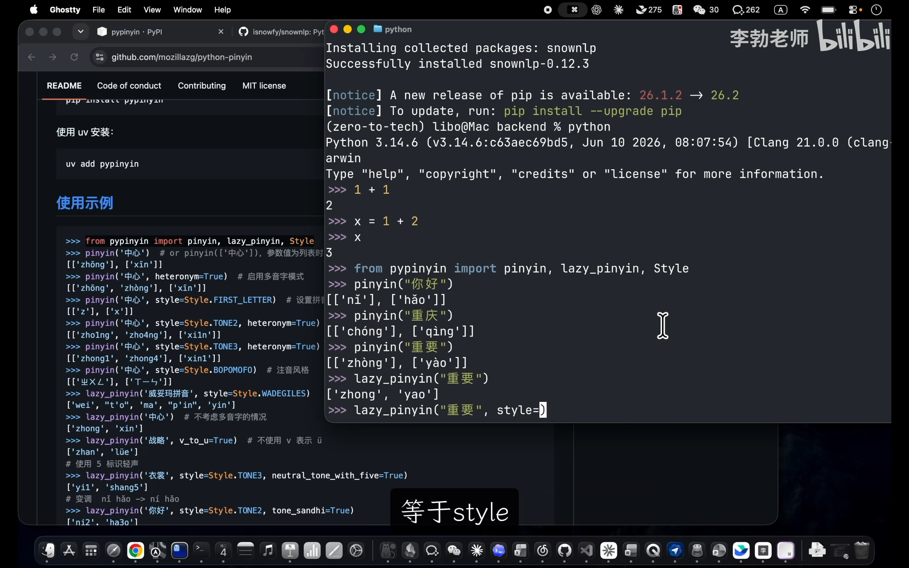
📷 使用 lazy_pinyin 结合 Style.TONE 取得理想拼音格式
在 B 站中打开 (00:17:00)
单层扁平列表 + 准确声调符号，这正是我们后面前后端联调所期望的最理想数据格式！
实战二：snownlp 情感倾向打分实测
接下来验证 snownlp。先导入核心类 SnowNLP：
>>> from snownlp import SnowNLP
场景 1：强烈正面情绪
>>> s = SnowNLP("这个东西真心很赞")
>>> s.sentiments
0.9678129486029384
分值高达 0.96+，极为接近上限 1.0，准确判定为强烈积极倾向。
场景 2：强烈负面情绪
>>> s = SnowNLP("太失望了很不好吃以后不来了")
>>> s.sentiments
0.0123512803861298
分值仅为 0.012，极度靠近下限 0.0，准确判定为强烈消极倾向。
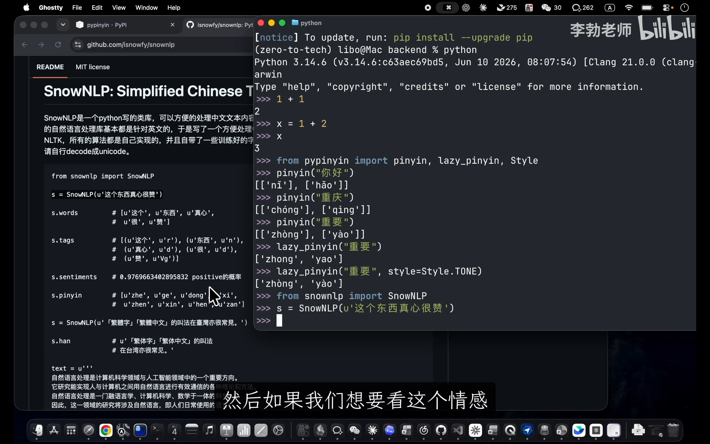
📷 REPL 中测试正面赞赏与负面批评语句的情感量化分值
在 B 站中打开 (00:17:45)
[!NOTE] 辩证看待传统 NLP 算法与现代大模型：
snownlp基于传统的贝叶斯统计机器学习模型。它的优势是超轻量、纯本地执行、毫秒级响应、不消耗 GPU 显存与 API Token 费用，非常适合做简单、高并发的快速打分。 但它对现代网络上的复杂隐喻、反讽（阴阳怪气）理解有限。在工业界更复杂的场景下，我们可以结合更高级的深度学习或大模型推理，但在我们当前的基础教学与小型 Web 实验室中，snownlp堪称完美契合的轻量级首选。
验证完毕后，键入 exit() 干净利落地退回到系统命令行：
>>> exit()
8. 方法论升华：第三方库集成四部曲
(参考时间: 18:45)
回顾刚才从无到有的整个过程，我们走过了一套不仅适用于 Python、更适用于所有现代软件工程的标准化第三方库集成流水线：
flowchart LR
Find["1. 找库<br/>AI 提示词探索候选"] --> Verify["2. 验库<br/>GitHub Stars + 文档对照"]
Verify --> Play["3. 玩库<br/>REPL 快速试错求证"]
Play --> Commit["4. 入库<br/>业务代码集成 + 依赖锁定"]
- 找库（Find）：清晰提炼自身业务输入与输出，借助 AI 快速检索生态中已有的候选方案；
- 验库（Verify）：严把质量关，通过社区关注度（Star）、更新频次以及官方文档规避死库与假库；
- 玩库（Play）：利用 REPL 交互环境，不建文件、不造垃圾，在几分钟内快速验证关键 API 传参和返回；
- 入库（Integrate）：确认无误后正式编写进项目业务文件，并锁定环境依赖。
俯瞰 Python 的广袤生态
今天我们学习的 pypinyin 和 snownlp 属于自然语言处理（NLP）领域。但这仅仅是 Python 庞大开源版图中的冰山一角：
| 领域方向 | 行业事实标准第三方库 |
|---|---|
| 网络爬虫与网络请求 | requests, httpx, beautifulsoup4, scrapy |
| 数据科学与数据分析 | pandas, numpy, matplotlib, seaborn |
| 人工智能与深度学习 | PyTorch, TensorFlow, transformers, scikit-learn |
| Web 异步与微服务 | fastapi, uvicorn, django, flask |
| 办公自动化与文件处理 | openpyxl, python-docx, pypdf, pillow |
无论未来你涉足哪个垂直领域，只要你掌握了今天这套四步法，你就能在最短时间内把全世界顶尖开发者的智慧纳为己用。
9. 依赖固化与版本锁定：pip freeze
(参考时间: 21:15)
在第 20 讲中，我们建立了一个极其重要的工程规范：任何新安装了第三方库的改动，都必须立即同步更新到环境清单文件中。
否则，一旦团队其他成员拉取代码，或者我们将项目部署到云端服务器，其他机器将完全不知道该项目新增了 pypinyin 和 snownlp，从而在启动时抛出致命的 ModuleNotFoundError。
在激活了虚拟环境的终端中，执行依赖导出：
pip freeze > requirements.txt
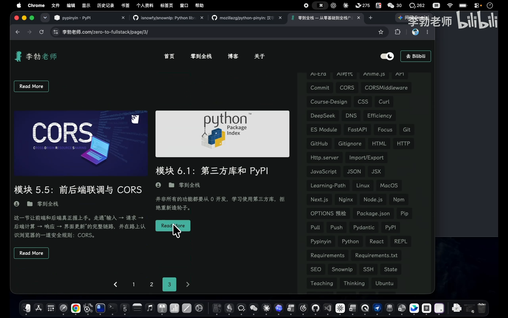
📷 课程讲义中锁定依赖的标准命令说明
在 B 站中打开 (00:21:40)
打开 backend/requirements.txt 检查，可以看到末尾已经准确追加了新依赖项及其严格的版本号：
pypinyin==0.55.0
snownlp==0.12.3
最后，将变更提交至 Git 仓库，形成稳健的版本里程碑：
git add requirements.txt
git commit -m "添加 pypinyin 和 snownlp 到 requirements.txt"
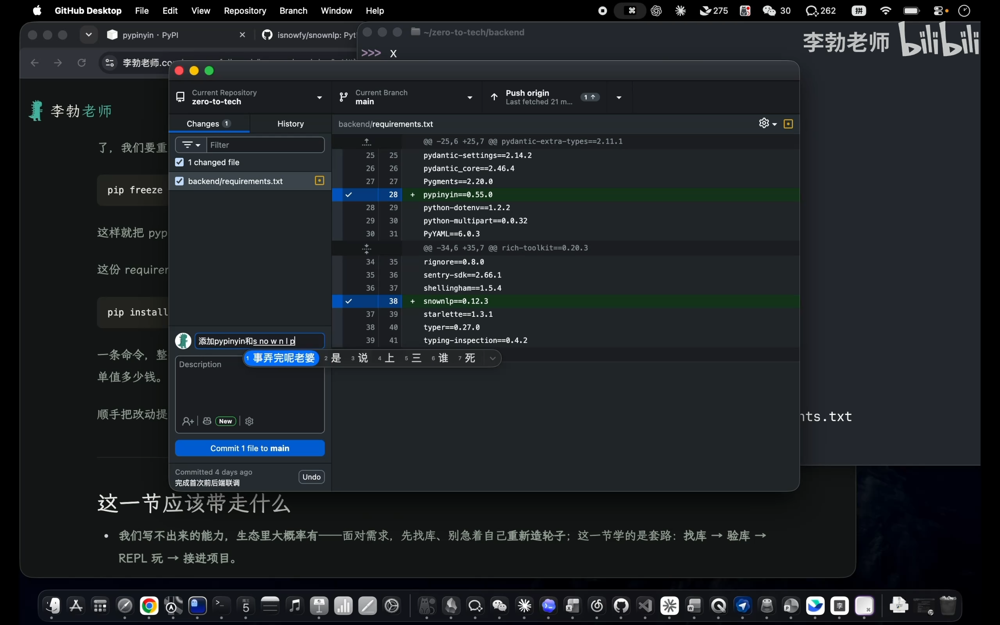
📷 在 GitHub Desktop 中核验 requirements.txt 差异并提交
在 B 站中打开 (00:22:15)
10. 本讲小结与下节展望
(参考时间: 22:30)
在本讲中，我们完成了两项关键认知跃升与工程落地：
* 认知升维：树立了“拒绝重复造轮子”的工程哲学，建立了 PyPI 与包管理器的宏大图景，掌握了现代 AI 时代“找库、验库、玩库、入库”的完整工程闭环；
* 环境准备：在虚拟环境中成功安装并测试了 pypinyin 与 snownlp，利用 REPL 敲定了最适合前端渲染的 API 传参，并用 pip freeze 固化了依赖环境。
在下一讲（第 25 讲：6.2 让网页真的会分析文字）中，我们将把今天在 REPL 中验证成功的代码正式接入 FastAPI 的 POST /api/analyze 路由中，打通前端文字输入、后端实时 NLP 计算与前端结果卡片动态反馈的完整链路，让网页真正拥有智能分析的能力！